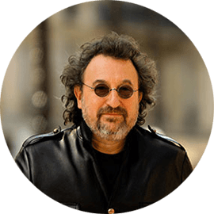

О нас
Расположившись в самом центре города BARrel обладает уникаьной атмосферой, оригинальным интерьером, высококлассным персоналом и развлечениями на любой вкус.
Вас ждёт большой и уютный основной зал, стильный караоке зал с современным оборудованием, профессиональными вокалистами и постоянно обновляемым песенным репертуаром, а также лаунж-зона - наш новый кальянный зал, в котором Вы забудете о сумасшедших городских буднях. В тёплое время года для Вас открыта большая и светлая Летняя Терраса с уникальной системой кондиционирования.
Мы любим наших Гостей, поэтому предлагаем Вам лучшие блюда европейской кухни, собранные в нашем Меню, замечательные десерты, авторские коктейли, алкоголь мировых брендов.
Совершите незабываемое путешествие в мир гастрономического блаженства, прекрасной музыки и зажигательных вечеринок!
Мы работаем круглосуточно для Вас!
Мы рады вас видеть
семь дней в неделю
в Пятницу и Субботу с 9:00 до 3:00
с Воскресенья по Четверг с 9:00 до 24:00
Люди говорят

Я поражен тем, что открытие бара «BARrel» в Харькове вызвало такой ажиотаж. Собралось просто огромное количество красивых людей. «BARrel» – это особое место, где нужно быть беззаботным, наслаждаться каждым мгновением – и, конечно, блистать. Я убедился, что приглашенные выдержали «гостевую» концепцию сети баров «BARrel». Я также восхищен самим харьковским «BARrel» – он показался мне больше, роскошнее и современнее, чем парижский.
Раймонд Визан, основатель сети баров«BARrel»
Атмосфера "BARrel" поражает с первой минуты прибывания в этом месте. зфйдя сюда вечером, я вышел уже под утро, абсолютно довольный вечером и в отличном настроении. Кроме этого тут один из лучших баров в городе. Такого разнообразия и качества коктейлей в нашем городе я не припомню. Порадовали и цены, для такого места они вполне демократичны.
Максим Шевченко, ресторанный критик